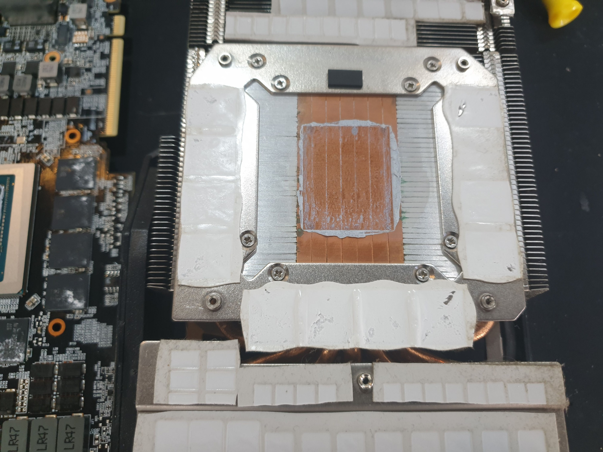
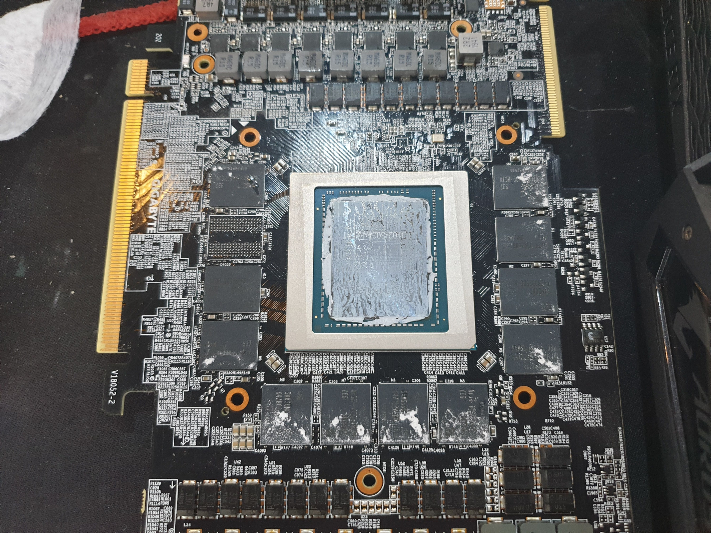

그래픽카드 서멀구리스 재도포 및 방열 점검
컴퓨터로 게임이나 고사양 작업을 할 때 쿨러 소음이 심해지거나 갑자기 화면이 꺼지는 증상(다운 현상)이 발생한다면 그래픽카드 내부의 열 배출 상태를 점검해야 합니다.

▲ 그래픽카드 분해 후 코어 및 메모리 점검

▲ 히트싱크 베이스 및 서멀패드 상태 점검
📌 이런 증상이 있다면 점검을 받아보세요!
- 게임 실행 시 쿨러가 비행기 소리처럼 시끄럽게 돌 때
- GPU 온도가 비정상적으로 치솟으며 게임이 튕길 때
- 중고 그래픽카드를 구매 후 안전하게 오래 사용하고 싶을 때
- 오랜 사용으로 굳어버린 서멀구리스 및 서멀패드 교체가 필요할 때
팝피씨에서는 굳어버린 기존 구리스를 깨끗하게 클리닝한 뒤, 고성능 프리미엄 서멀구리스 재도포와 서멀패드 상태 점검을 통해 쿨링 성능을 최상으로 끌어올려 드립니다.
⬅ 홈으로 돌아가기